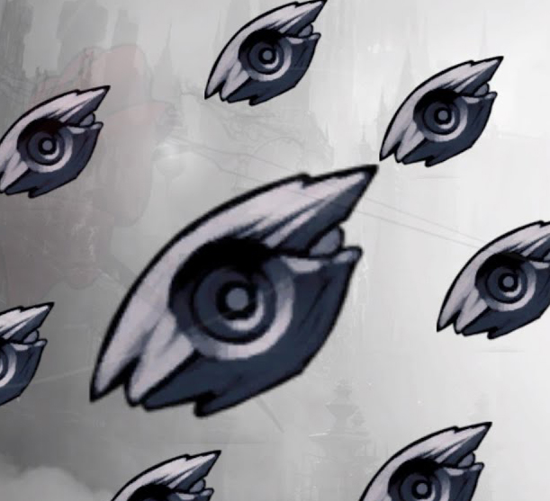
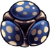
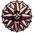
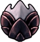
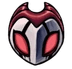

O que são encaixes de amuleto?
Os Encaixes de Amuletos são necessários para equipar os Amuletos. Amuletos diferentes exigem um número diferente de Encaixes. O Cavaleiro começa com 3 Encaixes. Mais 8 podem ser encontrados durante o jogo, totalizando 11 Encaixes. cada amuleto nescecita de uma quantidade de encaixes sendo de um encaixe até cinco encaixes sendo que o que precisa de cinco é um amuleto especial. e tambem um que não custa Encaixes.
Para que servem os Amuletos?
Os amuletos em Hollow Knight são acessórios especiais que oferecem vários bônus e habilidades especiais ao jogador. Eles são equipados utilizando encaixes, e só podem ser equipados e desequipados enquanto o jogador estiver sentado em um banco. Além disso, existe um estado chamado “Sobrecarregado”, que permite ao jogador equipar um amuleto que requer mais encaixes do que os disponíveis. No entanto, isso faz com que o dano recebido pelo jogador seja dobrado. Portanto, os amuletos servem para personalizar e melhorar as habilidades do jogador, permitindo diferentes estratégias e estilos de jogo. No entanto, eles devem ser usados com cuidado, pois a escolha e combinação de amuletos podem afetar significativamente a dificuldade e jogabilidade do jogo
amuletos existentes no jogo
| amuletos | funçoes |
|---|---|
| 
Cogumelo com Esporos |
Composto por fungos vivos. Dispersa esporos em contato com a ALMA Ao focar a ALMA, emite uma nuvem de esporos que danifica lentamente os inimigos. |
|
Mestre da Esquiva |
e assemelha a um inseto excêntrico conhecido apenas como 'O Mestre das Esquivas'. O portador será capaz de esquivar mais frequentemente, bem como esquivar para baixo. Perfeito para aqueles que querem se mover o mais rápido possível. |
| 
Escudo dos Sonhos |
Amuleto defensivo outrora usado por uma tribo que poderia moldar sonhos. Conjura um escudo que segue o portador e tenta protegê-lo. |
|
Carapaça Robusta |
Aumenta a resistência. Ao se recuperar de danos, o portador permanecerá invulnerável por mais tempo. Facilita a fuga de situações perigosas. |

Canção das Tecelãs |
Amuleto sedoso contendo uma música de despedida, deixada pelas Tecelãs que partiram de Hallownest para sua antiga casa. Invoca pequenas tecelãs para dar ao portador solitário um pouco de companheirismo e proteção. |
|
Útero Brilhante |
Drena a ALMA de seu portador e a utiliza para parir crias. As crias não desejam comer e nem viver, e se sacrificarão para proteger o seu progenitor. |
| 
Glória do Mestre do Ferrão |
Contém a paixão, a habilidade e os arrependimentos de um Mestre do Ferrão. Aumenta a maestria do portador sob as Artes do Ferrão, permitindo-o focar seus poderes mais rapidamente, e os liberar mais cedo. |
| 
Criança Grimm |
Usado por aqueles que participam do Ritual da Trupe Grimm. O portador deve buscar os Grimmários e coletar suas chamas. Chamas não coletadas aparecerão no mapa do portador(apenas aparecerão enquanto estiver com o amuleto equipado). |
Fato curioso sobre Hollow Knight
Voc√™ sabia que o personagem principal de Hollow Knight foi retirado de um projeto anterior da Team Cherry chamado Hungry Knight, que foi realizado em menos de 48 horas em um encontro de desenvolvedores? Isso √© um exemplo interessante de como as ideias podem evoluir e se transformar ao longo do tempo! üòä
No desenvolvimento de Hollow Knight, as inspirações da Team Cherry foram jogos como zelda II,Super metroid e Castlevania: Aria of Sorrow, e você tambem sabia que O modelo de movimento em Hollow Knight veio das séries Mega Man e Mega Man X.
Top runners
em primeiro 1°lugar skate king com 31m 24s de LRT(load removed time)
video no qual ele alcançou 1°lugar
Caso queira ver diretamente no Youtubeclique aqui
já em 2°lugar temos lep com 31m 39s de LRT
video no qual ele alcançou 2°lugar
e por ultimo mas não menos importante temos jackmanmarcus com 31m 46s de LRT
video no qual ele alcançou 3°lugar
Caso queira ver diretamente no Youtubeclique aqui